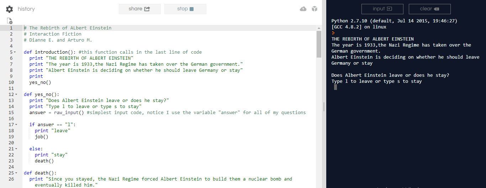

Python Project #1: The Rebirth of Albert Einstein
The first project incorporating typed lines of code is this one.
We used the site repl.it in order to complete this project with a partner (mine was Dianne). It was fairly simple
to code because it was just printing out statements after an input placed by the user was inserted. The user had two
choices to choose from when the story would bridge out from that point. The link to the interactive story is The Rebirth of Albert Einstein.
The overall project was fun to create and I learned how to use raw_inputs in order for the user to have some
control over what would happen next.

The code on top is how it looked like once the program was done and on the right side
displays the story once the code was ran.